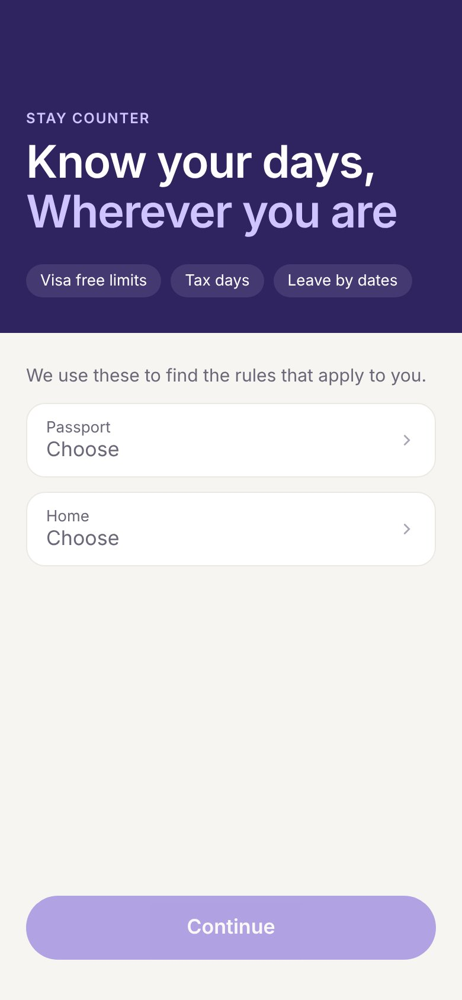
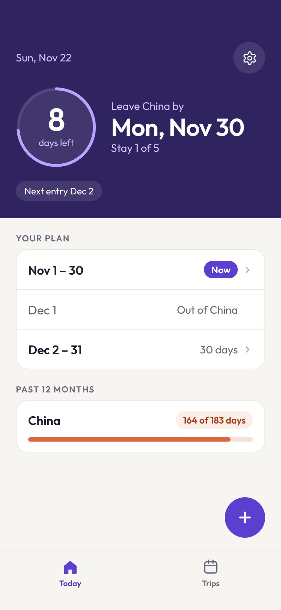
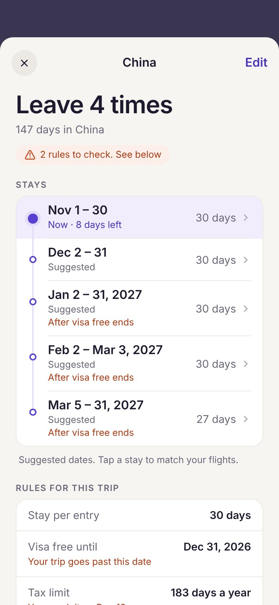

Yeokyung ChoiSIDE PROJECTS · DESIGNED AND BUILT BY ME
Small tools, designed and built with AI
Two web apps that started from problems in my own life. With AI I take each one from a problem to a working product, then test it with other people.
Designer and builder · Desktop and mobile web
PROJECT
Stay Counter
Know your days, wherever you are. A calm travel days counter that tells people living between countries how long they can stay, when to leave, and how close they are to a tax limit.
People who live between countries track two kinds of day limits, and no common tool does it for them.
Entry limitsChina lets a Korean passport holder stay 30 days per visit visa free. A 5 month stay means several exits, planned before booking flights.
Tax limitsSpending 183 days in a country can make you a tax resident there, and each country counts those days in its own way.
Today people work this out with calendars, spreadsheets and guesswork. One miscount can mean an overstay fine, a refused entry or an unexpected tax bill, and the risk is highest on long or repeated trips, exactly when counting by hand gets hardest.
Who it is for
Business travellers on long assignments, expats who travel often and remote workers who split their year across countries. I am one of them, with a Korean passport, a home in the Netherlands and a planned 5 month stay in China.
02
Hypotheses
1
One answer on the home screenIf the app answers one question, when must I leave, with a single date, people will check it instead of keeping their own count.
2
Plan before bookingIf the app suggests the stays before people book, they will book flights that fit the limits the first time.
3
Tax days next to entry limitsIf tax days are counted the way each country counts them, people will notice a tax problem months earlier.
03
Principles
Five rules kept every screen calm.
One answer per screenOne number and one date, like 8 days left and Leave China by Mon, Nov 30.
Dark hero, light contentA deep purple hero carries the answer. Everything else waits below.
Purple acts, coral warnsCoral only appears when something needs checking.
Never guess for the personA date the app proposes says Suggested until it is matched to a flight.
One way to do each thingTop left always leaves a sheet, the bottom always moves forward.
04
Screens

First open. Two questions find the rules.

Today. One answer and a countdown ring.

Trip. Stays, rules and what to check.Trips. The trip you are in comes first.
The portfolio you are reading uses the same design system, the Outfit typeface, a warm off white and one purple.
05
How I plan to test it
Give the app to 5 to 8 people who travel like this, ask them to plan one real trip and compare their plan to the rules. Then watch whether they keep using it during the trip.
Trust the answerPeople open the app during a trip without editing anything.
Book right first timeMost suggested stays are later matched to flights, with no dates over the limit.
Catch tax risk earlyPeople open a trip when the rules to check warning appears.
PROJECT
Shuo
A Mandarin shadowing app for the phrases learners really hear, at work or on a trip.